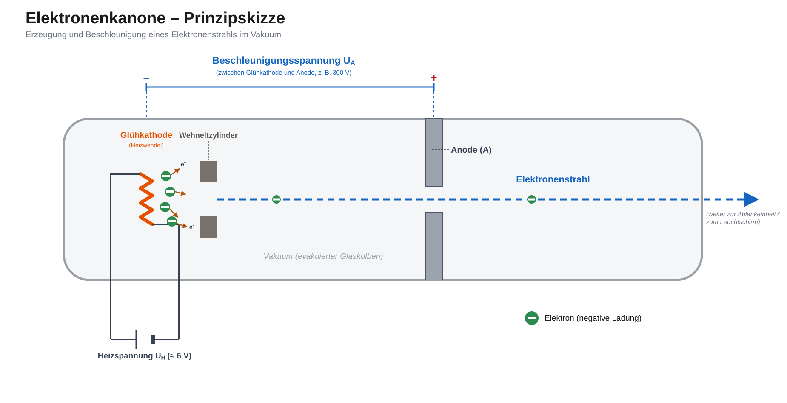

Physik · Qualifikationsphase Q1 – Ladungen, Felder und Induktion / Geladene Teilchen in Feldern
Die Elektronenkanone
Erzeugung eines Elektronenstrahls: Der Glühelektrische Effekt
Fadenstrahlrohr, Elektronenstrahlablenkröhre, Oszilloskop und Röhrenfernseher haben eines gemeinsam: Sie benötigen einen gerichteten Elektronenstrahl. Erzeugt wird dieser in einer Elektronenkanone. Bevor die Elektronen beschleunigt und abgelenkt werden können, müssen sie zunächst überhaupt aus einem Metall austreten – das ist der erste Schritt, den wir hier genauer untersuchen.
Aufbau einer Elektronenkanone (Prinzipskizze)

Wie möchtest du die Aufgaben bearbeiten?
Wähle, ob deine Ergebnisse in der Datenbank gespeichert werden sollen.
🔐 Mit Anmeldung – Ergebnisse speichern
Melde dich mit deiner Schul-E-Mail-Adresse an. Am Ende kannst du deine Antworten speichern und beim nächsten Besuch wieder laden.
👤 Ohne Anmeldung – nicht gespeichert
Bearbeite die Aufgaben direkt, ohne dich anzumelden. Du erhältst wie gewohnt sofort Feedback zu jeder Aufgabe – deine Ergebnisse gehen aber beim Schließen der Seite verloren.
Anmelden
Gib deine Schul-E-Mail-Adresse und dein Passwort ein.
Angemeldet als
ℹ️ Du bearbeitest die Aufgaben ohne Anmeldung. Deine Antworten werden nicht gespeichert und gehen beim Schließen der Seite verloren.
Der Glühelektrische Effekt
Wie schaffen es Elektronen überhaupt, ein festes Metall zu verlassen?
📖 Hintergrundwissen: Der Glühelektrische Effekt (Edison-Richardson-Effekt)
In einem Metall wie dem Wolframdraht einer Glühkathode gibt es sehr viele frei bewegliche Leitungselektronen, die sich – ähnlich wie Teilchen in einem Gas – ungeordnet und mit ganz unterschiedlichen Geschwindigkeiten durch das Metallgitter bewegen. Trotzdem verlassen sie das Metall bei Zimmertemperatur so gut wie nie von selbst.
Der Grund: Um die Metalloberfläche zu verlassen, muss ein Elektron eine Mindestenergie aufbringen, die sogenannte Austrittsarbeit WA (auch Ablösearbeit genannt). Sie entsteht durch die anziehenden Kräfte der positiv geladenen Metallionen im Gitter und ist je nach Material unterschiedlich groß (bei Wolfram z. B. rund 4,5 eV).
Erhitzt man den Draht stark – bei einer Glühkathode geschieht das durch die Heizspannung UH, die einen Heizstrom durch den dünnen Draht treibt und ihn auf mehrere hundert bis über tausend Grad Celsius aufheizt – verschiebt sich die Geschwindigkeitsverteilung der Leitungselektronen: Ein immer größerer Anteil von ihnen besitzt genügend thermische Energie, um WA zu überwinden und die Oberfläche zu verlassen.
Dieses Austreten von Elektronen aus einem stark erhitzten Metall nennt man den Glühelektrischen Effekt.
Er findet im Vakuum statt – einerseits, damit die Elektronen nicht sofort mit Luftmolekülen zusammenstoßen, andererseits, damit der glühende Draht nicht sofort verbrennt (oxidiert).
Die ausgetretenen Elektronen bilden zunächst eine sogenannte Raumladungswolke in unmittelbarer Nähe des Drahtes. Erst ein von außen angelegtes elektrisches Feld (die Beschleunigungsspannung zwischen Kathode und Anode) zieht sie gezielt ab und beschleunigt sie zu einem gerichteten Elektronenstrahl.
Wichtig zur Abgrenzung: Der Glühelektrische Effekt hat nichts mit Licht zu tun – anders als der lichtelektrische (photoelektrische) Effekt, bei dem Licht Elektronen aus einem Metall herauslöst. Hier ist ausschließlich die thermische Energie durch Erhitzen entscheidend.
Je höher die Heizspannung bzw. die Temperatur des Drahtes ist, desto mehr Elektronen erreichen pro Zeiteinheit die nötige Mindestenergie – der aus dem Draht austretende Elektronenstrom nimmt also mit der Temperatur zu.
Aufgabe 1Multiple Choice
Welche der folgenden Aussagen zum Glühelektrischen Effekt beim Austritt von Elektronen aus dem Glühdraht sind korrekt?
Mehrere Antworten können richtig sein.
Aufgabe 2Multiple Choice
Bei konstanter Beschleunigungsspannung UA wird die Heizspannung UH der Glühkathode ausgehend von 0 V langsam erhöht. Dabei wird der zur Anode fließende Strom IA gemessen.
Welche der folgenden Aussagen zu diesem Versuch sind korrekt?